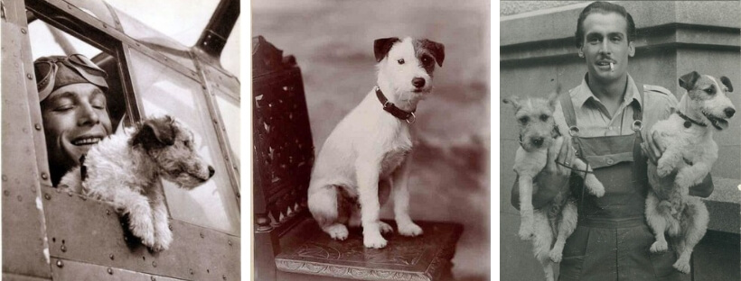

Історія Джек-рассел-тер'єра
Історія Джека-рассела відноситься до походження породи собак, яка отримала назву на честь свого засновника, ревера Джона «Джека» Рассела. Джон Рассел був відомим британським зоологом та собаководом, який жив у 19-му столітті. Він був зацікавлений у розвитку невеликих, енергійних та робочих собак, які були придатними для полювання на лисиць.
Порода Джек-рассел, відома також як Джек-рассел-тер'єр, була визнана в Англії у 20-х роках 20-го століття. Спочатку їх використовували для полювання на лисиць, вони були маневреними та здатними проникнути в нору лисиці та вийняти її. Вони також були популярними як компаньйони для реверів, оскільки вони були жвавими, розумними та вірними собаками.
У 1935 році було створено Клуб Джек-рассел-тер'єрів в Англії для реєстрації та просування породи. Це сприяло популярності породи, і Джек-рассел-тер'єрів стали дедалі більш популярними як сімейні та робочі собаки.
У 1990-х роках порода почала отримувати все більше визнання в Сполучених Штатах, і Американський клуб Кернелів Джек-рассел-тер'єрів було створено в 1997 році. З тих пір Джек-рассел-тер'єри стали популярними собаками в США та по всьому світу.
Розміри Джек-рассел-тер'єра
Джек-рассел-тер'єр - це порода собак, яка відома своєю енергійністю та маленькими розмірами. Зазвичай, розміри Джека-ассела можуть варіюватися, але ось загальні вказівки щодо їх стандартних розмірів:
- Вага: Зазвичай, вага Джека-рассела коливається від 5 до 7 кг.
- Висота: Стандартна висота Джека-рассела становить близько 25-30 сантиметрів у холці (на плечі).
Характер Джек-рассел-тер'єра
- Енергійність: Джек-рассел-тер'єри мають багато енергії і потребують активної фізичної активності. Вони потребують багато руху, довгих прогулянок та ігор.
- Жвавість: Ці собаки часто відзначаються своєю жвавістю та веселістю. Вони завжди готові до гри і можуть бути досить активними навіть у відносно невеликому просторі.
- Інтелект: Джек-рассел-тер'єри вважаються досить розумними собаками. Вони швидко навчаються командам та трюкам, і вони відчувають себе добре, коли вони мають можливість використовувати свій інтелект.
- Незалежність: Джек-рассел-тер'єри можуть бути трохи незалежними та норовливими. Вони можуть мати схильність до самостійного прийняття рішень та виявляти незалежність у своїх діях.
- Сміливість: Ці собаки часто проявляють велику сміливість і сміливість, що робить їх гарними вартовими і спортивними партнерами.
Важливо зазначити, що характер кожної окремої собаки може трохи відрізнятися, навіть у межах однієї породи. Впливати на характер собаки також може соціалізація, виховання та середовище, в якому вона зростає.
Вгору